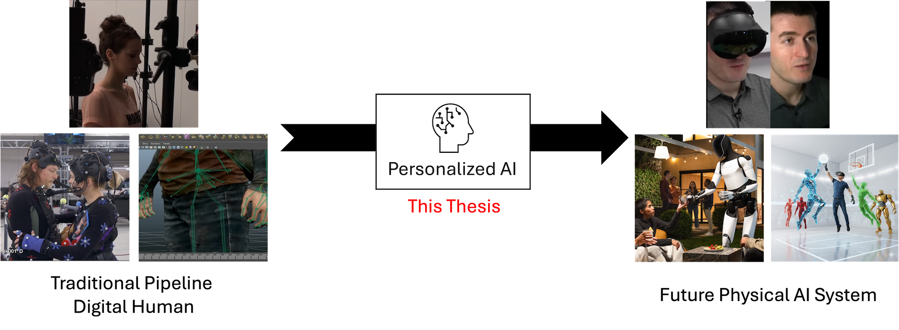
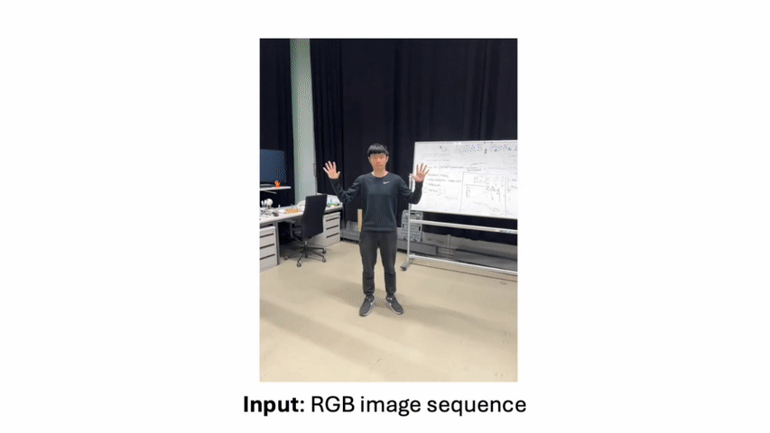

Advancing Digital Humans
with Personalized Human-Centric AI
Hsuan-I Ho | PhD Defense on 02, February 2026

Personalized AI a key to advancing human-centric digital human technologies toward future physical AI systems.
This thesis tackles three fundamental domains in the human-centric AI: Digitalization, Modeling, and Perception.
Digitalization
Developing methods to capture and create high-fidelity, personalized 3D digital appearances from minimal inputs.
Modeling
Building editable and semantically-aware 3D representations that allow for intuitive customization of digital avatars.
Perception
Enhancing estimation of human state by leveraging personalized shape and pose priors.
Contributions to be presented

Digitalization
CVPR 2024 SiTH
Digitalization of personal 3D appearances from single-view images
sith-diffusion.github.io
Modeling
CVPR 2023 CustomHumans
An editable 3D representation for semantic avatar customization.
custom-humans.github.io
Perception
ICCV 2025 PHD
Enhancing perception by leveraging personalized shape and pose priors.
phd-pose.github.ioAdditional selected contributions

3DV 2026 GaussianWardrobe
Learning compositional avatars to enable realistic free-form virtual try-on

SIGGRAPH Asia 2025 PriorAvatar
Robust in-the-wild 3D avatar reconstruction using learned priors.

BMVC 2025 ReMu
Reconstructing penetration-free multi-layered clothing from image layers.

CVPR 2024 4D-DRESS
The first 4D clothing dataset with semantic labels and benchmarks.